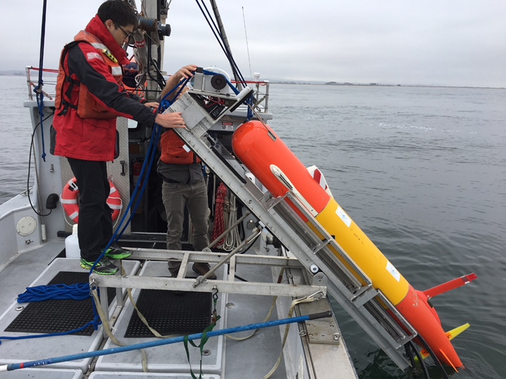
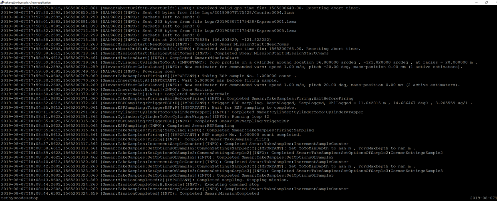
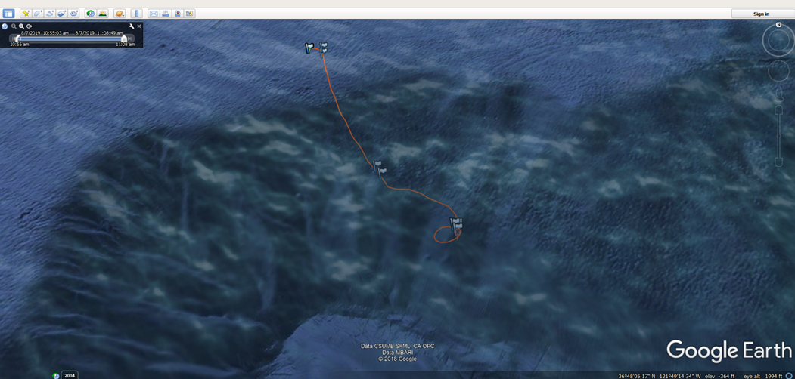
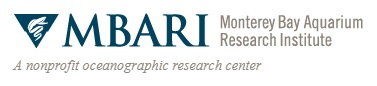
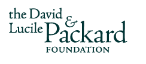

For some context, on the left is a photo of myself and my mentor Ben deploying an LRAUV from the R/V Paragon. It is about two meters (6.5 ft) long and a foot in diameter. Not bad for size, but compared to the seabed mapping AUVs, which are roughly similar in size to naval torpedoes, or the ship-launched ROV Doc Ricketts, which is slightly shorter and taller than a Hummer, the LRAUV ranks as one of MBARI's smaller robots. Developed around 10 years ago, endurance is the focus of an LRAUV, as the name suggests. Through strict optimization of power consumption, sampling and measurement is made possible over thousands of kilometers, ranging time periods of weeks or even months. There are close to 20 LRAUVs now in operation and because of the sheer scale of the oceans, it is unsurprising that MBARI intend to use them in a swarm robotics-esque manner; in fact, this has already been demonstrated through recent experiments, which I will detail later.
Naturally, MBARI had already developed a custom simulator for the LRAUV. However, there were a few caveats: first, the simulator was basically a terminal-based live system log, meaning that there was no live visual of the robot in its environment; second, there was limited customizability of the environment (i.e. chlorophyll patches and oil spills were very difficult to do); and third, except for rudimentary pinging, there was no messaging or likewise complex communications between multiple LRAUVs built into the simulator. This simulator is shown below, with the terminal view on the left and the post-simulation trajectory uploaded to Google Earth (Images from Yanwu Zhang).


With the aforementioned caveats, this simulator is insufficient for simulating complex, multi-robot operations with the LRAUV, something that MBARI was aware of and had been looking into. Coincidentally, they had been looking into the UUV Simulator as a potential replacement simulator, the very same that I had used for my winter quarter plume-tracing project. As a result of my familiarity with the simulator and associated code, scripts, and files, I was well suited for adapting the UUV Sim to the LRAUVs and showcasing its capabilities for MBARI. For this task, I created a few demonstration scenarios, one taken from a real large-scale MBARI experiment and another inspired by MBARI research. I should note that in lieu of a LRAUV robot model, the ECA_A9 from the sample UUV Sim robot models was used for its similar physical size and AUV dynamics.
CANON
The Controlled, Agile, and Novel Observing Network (CANON) experiment, most recently conducted in Spring 2019, is a massive venture by MBARI to study the diurnal vertical migration, the nightly migration of tiny oceanic animals such as copepods, krill, and fish towards the surface. In order to study this important ecological behavior, LRAUVs were just one part of the group of observational and sampling equipment used during this experiment, visualized on the left.
Specifically of note are the two LRAUVs within the yellow circle, one idling near the center Wave Glider - an unmanned surface vehicle produced by Liquid Robotics in use at MBARI - and the other moving in a roughly circular trajectory. Also, though it isn't visible from this overhead view, the LRAUVs commonly employ a 'yo-yo' gait, moving up and down through various depths to sample throughout the water column. This is obviously very useful for studying the diurnal vertical migration. The combination of these trajectories and the yo-yo gait composed the behavioral component of the simulation.
The Controlled, Agile, and Novel Observing Network (CANON) experiment, most recently conducted in Spring 2019, is a massive venture by MBARI to study the diurnal vertical migration, the nightly migration of tiny oceanic animals such as copepods, krill, and fish towards the surface. In order to study this important ecological behavior, LRAUVs were just one part of the group of observational and sampling equipment used during this experiment, visualized on the left.
Specifically of note are the two LRAUVs within the yellow circle, one idling near the center Wave Glider - an unmanned surface vehicle produced by Liquid Robotics in use at MBARI - and the other moving in a roughly circular trajectory. Also, though it isn't visible from this overhead view, the LRAUVs commonly employ a 'yo-yo' gait, moving up and down through various depths to sample throughout the water column. This is obviously very useful for studying the diurnal vertical migration. The combination of these trajectories and the yo-yo gait composed the behavioral component of the simulation.

With cooperative, multi-vehicular robotic operations, inter-vehicular communications is paramount - otherwise, it would simply be multiple robots happening to operate in the same area. The LRAUV employs acoustic communication in the form of ultra-short baseline, or USBL, in which a transceiver calculates the distance and angles from it to a transponder through acoustic pings. Communication for this simulation was done by having the center station calculate the azimuth, bearing, and range to each LRAUV and publish this information to a topic unique to each LRAUV, which would then calculate its own position (knowing the station's position) from this information. The simulation is shown below, with an ROV model substituted for the Wave Glider.
TARGETED SAMPLING
Targeted or adaptive sampling algorithms are commonly used in oceanographic research, simply because the oceans are too large to sample everywhere and obtain a flawless dataset. With modern interest and advances in robot autonomy, these algorithms can now be paired with things like machine learning and swarm robotics to give researchers more sophisticated tools with which to survey the oceans. For the LRAUV, which can remain deployed for long enough to not only observe changes in the environment and measurements, but also react to them and adjust its future sampling trajectory, these algorithms allow researchers to take full advantage of the robot's extreme endurance.
This simulation added in the plume simulator from the UUV Sim; one LRAUV would search the operational area for high particle concentrations and relay their locations to the secodn LRAUV, which would then come to take measurements in the proximity. Communications for this was made more realistic; a service was added as a switch so that communication (location information being published) between the two robots would only occur when a sufficiently high enough particle concentration had been detected, and random failures were implemented as a part of this service, to mimick unreliability of acoustic comms in water. Lastly, the trajectory code was revamped to make use of the WaypointSet message and therefore have a cleaner journey, rather than traversing it point by point and checking if each point had been reached. The resulting simulation is shown below.
Targeted or adaptive sampling algorithms are commonly used in oceanographic research, simply because the oceans are too large to sample everywhere and obtain a flawless dataset. With modern interest and advances in robot autonomy, these algorithms can now be paired with things like machine learning and swarm robotics to give researchers more sophisticated tools with which to survey the oceans. For the LRAUV, which can remain deployed for long enough to not only observe changes in the environment and measurements, but also react to them and adjust its future sampling trajectory, these algorithms allow researchers to take full advantage of the robot's extreme endurance.
This simulation added in the plume simulator from the UUV Sim; one LRAUV would search the operational area for high particle concentrations and relay their locations to the secodn LRAUV, which would then come to take measurements in the proximity. Communications for this was made more realistic; a service was added as a switch so that communication (location information being published) between the two robots would only occur when a sufficiently high enough particle concentration had been detected, and random failures were implemented as a part of this service, to mimick unreliability of acoustic comms in water. Lastly, the trajectory code was revamped to make use of the WaypointSet message and therefore have a cleaner journey, rather than traversing it point by point and checking if each point had been reached. The resulting simulation is shown below.
The last leg of this project was to adapt the known LRAUV dynamics from the current simulator into the UUV Sim, to modify the ECA_A9 model with LRAUV coefficients. One of the neat features of UUV Sim is that it provides the hydrodynamics that Gazebo cannot, things like added mass, linear/nonlinear drag, and hydrostatics (rigid body and collision dynamics are accounted for through Gazebo's physics engine) With that being said, some of the changes to the model included: basic hydrostatics like length, width, volume; added mass coefficients; and drag coefficients. The end result was disappointing, with the modified model being excessively sluggish and showing trouble with depth control. However, this was somewhat expected, due to the inevitable differences in the various vehicle characteristics and parameters provided between the current MBARI simulator and the ECA_A9 model. Any parameters in the latter that could not be accounted for in the former were simply left alone, and there were quite a few of these. Though there is much work to be done on this end, there are clear starting points.
This project was made possible through the generous support of the Monterey Bay Aquarium Research Institute and the David & Lucile Packard Foundation.


This project was made possible through the generous support of the Monterey Bay Aquarium Research Institute and the David & Lucile Packard Foundation.